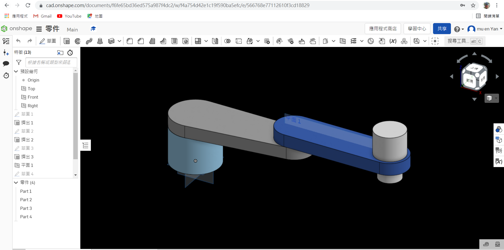

W15 <<
Previous W16
項目1 : Onshape 零組件繪製
以下是我自行繪製的零件，影片是我使用Onshape軟體的繪製零件教學。

onshape圖檔網址:
https://cad.onshape.com/documents/f6fe65bd36ed575a987f4dc2/w/f4a754d42e1c19f590ba5efc/e/566768e77112610f3cd18829
onshape圖檔連結:onshape個人線上繪圖連結
機械手臂下載點:機械手臂STL檔
項目2 : 建立 CoppeliaSim 4.1.0 MTB robot 場景
透過自行繪製之零件輸入 CoppeliaSim 後，組合為 MTB robot 模型，並利用 Leo Editor 以 require 導入 Lua 程式運作，分別控制各軸轉動示範，以下有我的影片示範，以及各個按鍵的功能。
Google Drive:所有檔案
以下是我「所有檔案」的檔案內容，有需要的同學們可以點下載參考。
Leo檔:鍵盤操作
可用鍵盤控制的程式的基本操作:
方向鍵左-軸1左轉
方向鍵右-軸1右轉
方向鍵上-軸2左轉
方向鍵下-軸2右轉
S-吸盤向下
W-吸盤向上並吸取
空白鍵-放下
function sysCall_init()
joint1=sim.getObjectHandle('joint1')
joint2=sim.getObjectHandle('joint2')
jointz=sim.getObjectHandle('jointz')
joint3=sim.getObjectHandle('joint3')
sim.setJointTargetPosition(joint1,0)
sim.setJointTargetPosition(joint2,0)
sim.setJointTargetPosition(joint3,0)
sim.setJointTargetPosition(jointz,0)
deg1=0
deg2=0
deg3=0
end
function sysCall_actuation()
message,auxiliaryData=sim.getSimulatorMessage()
while message~=-1 do
if (message==sim.message_keypress) then
if (auxiliaryData[1]==2009) then
deg1=deg1+1
deg3=deg2-deg1
sim.setJointTargetPosition(joint1,deg1*math.pi/180)
end
if (auxiliaryData[1]==2010) then
deg1=deg1-1
deg3=deg2-deg1
sim.setJointTargetPosition(joint1,deg1*math.pi/180)
end
if (auxiliaryData[1]==2007) then
deg2=deg2+1
deg3=deg1-deg2
sim.setJointTargetPosition(joint2,deg2*math.pi/180)
end
if (auxiliaryData[1]==2008) then
deg2=deg2-1
deg3=deg1-deg2
sim.setJointTargetPosition(joint2,deg2*math.pi/180)
end
if (auxiliaryData[1]==115) then
sim.setJointTargetPosition(jointz,-0.085)
sim.setIntegerSignal("pad_switch",1)
end
if (auxiliaryData[1]==119) then
sim.setJointTargetPosition(jointz,0)
end
if (auxiliaryData[1]==32) then
sim.setIntegerSignal("pad_switch",0)
end
sim.setJointTargetPosition(joint3,deg3*math.pi/180)
end
message,auxiliaryData=sim.getSimulatorMessage()
end
end
-------------------------------------------------------------------------------------------
以下是參考老師提供的程式，藉由鍵盤按鍵操作機械手臂的轉向。
if (auxiliaryData[1]==114) then --r right turn in degree
-- if key r pressed axis1 angle adds 5 degrees
rotation1 = rotation1 + 5*deg
sim.setJointPosition(axis1, rotation1)
end -- if r
if (auxiliaryData[1]==108) then --l left turn in degree
-- if key l pressed axis1 angle substract 5 degrees
rotation1 = rotation1 - 5*deg
sim.setJointPosition(axis1, rotation1)
end -- if l
if (auxiliaryData[1]==100) then --d suction pad down
-- if key d pressed axis3 will down 0.01 m plus calibration
distance3 = distance3 + 0.01 + calibration
sim.setJointPosition(axis3, distance3)
end -- if d
if (auxiliaryData[1]==117) then --u suction pad up
-- if key u pressed axis3 will up 0.01 m minus calibration
-- 吸盤往下升 1 公分加上校正值
distance3 = distance3 - 0.01 - calibration
sim.setJointPosition(axis3, distance3)
end -- if u
項目3 : 手臂末端加入 components-gripper-suction pad 吸盤
在其機械手臂末端接上 force sensor 後接上標準 suction pad ，使其可以取放方塊。
驅動程式參數:
根據每個人所做的機械手臂大小不同，吸盤軸下降高度也會有所不同
像是我 jointz 的參數改為-0.055m
function moving(x,y)
a=0.4
b=0.4
c=math.pow((math.pow(x,2)+math.pow(y,2)),0.5)
s=(a+b+c)/2
area=math.pow((s*(s-a)*(s-b)*(s-c)),0.5)
h=area/(2*c)
deg1_base=math.atan(x/y)
if x<0 and y<0 then
deg1_base=deg1_base+math.pi
end
deg1_tri=math.asin(h/a)
deg1=deg1_base+deg1_tri
deg2=math.pi-(0.5*math.pi-deg1_tri)-math.acos(h/b)
deg3=deg2-deg1
print(deg1)
sim.setJointTargetPosition(joint01,deg1)
sim.setJointTargetPosition(joint02,-deg2)
sim.setJointTargetPosition(joint03,deg3)
end
function sysCall_threadmain()
joint01=sim.getObjectHandle('joint1')
joint02=sim.getObjectHandle('joint2')
joint03=sim.getObjectHandle('joint3')
jointz=sim.getObjectHandle('jointz')
sim.setJointTargetPosition(joint01,0)
sim.setJointTargetPosition(joint02,0)
sim.setJointTargetPosition(joint03,0)
sim.setJointTargetPosition(jointz,0)
sim.setIntegerSignal("pad_switch",1)
sim.setJointTargetPosition(jointz,-0.085)
sim.wait(2)
sim.setJointTargetPosition(jointz,0)
while sim.getSimulationState()~=sim.simulation_advancing_abouttostopre do
moving(0.2,0.7)
sim.wait(2)
sim.setIntegerSignal("pad_switch",0)
sim.wait(2)
sim.setIntegerSignal("pad_switch",1)
sim.setJointTargetPosition(jointz,-0.085)
sim.wait(2)
sim.setJointTargetPosition(jointz,0)
sim.wait(2)
moving(-0.3,-0.55)
sim.wait(2)
sim.setIntegerSignal("pad_switch",0)
sim.wait(2)
sim.setIntegerSignal("pad_switch",1)
sim.setJointTargetPosition(jointz,-0.085)
sim.wait(2)
sim.setJointTargetPosition(jointz,0)
sim.wait(2)
end
end
----------------------------------------------------------------------------------------------------
以下是參考同學40823214提供的程式
maxPullForce=sim.getScriptSimulationParameter(sim.handle_self,'maxPullForce')
maxShearForce=sim.getScriptSimulationParameter(sim.handle_self,'maxShearForce')
maxPeelTorque=sim.getScriptSimulationParameter(sim.handle_self,'maxPeelTorque')
sim.setLinkDummy(l,-1)
sim.setObjectParent(l,b,true)
m=sim.getObjectMatrix(l2,-1)
sim.setObjectMatrix(l,-1,m)
end
function sysCall_cleanup()
--this is teach by 40823214
sim.setLinkDummy(l,-1)
sim.setObjectParent(l,b,true)
m=sim.getObjectMatrix(l2,-1)
sim.setObjectMatrix(l,-1,m)
end
function sysCall_sensing()
parent=sim.getObjectParent(l)
--this is teach by 40823214
local sig=sim.getIntegerSignal("pad_switch")
if (not sig) or (sig==0) then
if (parent~=b) then
sim.setLinkDummy(l,-1)
sim.setObjectParent(l,b,true)
m=sim.getObjectMatrix(l2,-1)
sim.setObjectMatrix(l,-1,m)
end
else
if (parent==b) then
index=0
while true do
shape=sim.getObjects(index,sim.object_shape_type)
if (shape==-1) then
break
end
local res,val=sim.getObjectInt32Parameter(shape,sim.shapeintparam_respondable)
if (shape~=b) and (val~=0) and (sim.checkProximitySensor(s,shape)==1) then
-- Ok, we found a respondable shape that was detected
-- We connect to that shape:
-- Make sure the two dummies are initially coincident:
sim.setObjectParent(l,b,true)
m=sim.getObjectMatrix(l2,-1)
sim.setObjectMatrix(l,-1,m)
-- Do the connection:
sim.setObjectParent(l,shape,true)
sim.setLinkDummy(l,l2)
break
end
index=index+1
end
else
-- Here we have an object attached
if (infiniteStrength==false) then
-- We might have to conditionally beak it apart!
result,force,torque=sim.readForceSensor(suctionPadLink) -- Here we read the median value out of 5 values (check the force sensor prop. dialog)
if (result>0) then
breakIt=false
if (force[3]>maxPullForce) then breakIt=true end
sf=math.sqrt(force[1]*force[1]+force[2]*force[2])
if (sf>maxShearForce) then breakIt=true end
if (torque[1]>maxPeelTorque) then breakIt=true end
if (torque[2]>maxPeelTorque) then breakIt=true end
if (breakIt) then
-- We break the link:
sim.setLinkDummy(l,-1)
sim.setObjectParent(l,b,true)
m=sim.getObjectMatrix(l2,-1)
sim.setObjectMatrix(l,-1,m)
end
end
end
end
end
end
項目4 : 逆向運算學函式
透過 Leo Editor Lua 程式編寫方法，以程式指定方塊取放之兩個位置 - (0.2, 0.7, 0.05) 與 (-0.3, -0.55, 0.05)。
function moving(x,y)
a=0.4
b=0.4
c=math.pow((math.pow(x,2)+math.pow(y,2)),0.5)
s=(a+b+c)/2
area=math.pow((s*(s-a)*(s-b)*(s-c)),0.5)
h=area/(2*c)
deg1_base=math.atan(x/y)
if x<0 and y<0 then
deg1_base=deg1_base+math.pi
end
deg1_tri=math.asin(h/a)
deg1=deg1_base+deg1_tri
deg2=math.pi-(0.5*math.pi-deg1_tri)-math.acos(h/b)
deg3=deg2-deg1
print(deg1)
sim.setJointTargetPosition(joint01,deg1)
sim.setJointTargetPosition(joint02,-deg2)
sim.setJointTargetPosition(joint03,deg3)
end
function sysCall_threadmain()
joint01=sim.getObjectHandle('joint1')
joint02=sim.getObjectHandle('joint2')
joint03=sim.getObjectHandle('joint3')
jointz=sim.getObjectHandle('jointz')
sim.setJointTargetPosition(joint01,0)
sim.setJointTargetPosition(joint02,0)
sim.setJointTargetPosition(joint03,0)
sim.setJointTargetPosition(jointz,0)
sim.setIntegerSignal("pad_switch",1)
sim.setJointTargetPosition(jointz,-0.055)
sim.wait(3)
sim.setJointTargetPosition(jointz,0)
while sim.getSimulationState()~=sim.simulation_advancing_abouttostopre do
moving(0.2,0.7)
sim.wait(3)
sim.setIntegerSignal("pad_switch",0)
sim.wait(3)
sim.setIntegerSignal("pad_switch",1)
sim.setJointTargetPosition(jointz,-0.055)
sim.wait(3)
sim.setJointTargetPosition(jointz,0)
sim.wait(3)
moving(-0.3,-0.55)
sim.wait(3)
sim.setIntegerSignal("pad_switch",0)
sim.wait(3)
sim.setIntegerSignal("pad_switch",1)
sim.setJointTargetPosition(jointz,-0.055)
sim.wait(3)
sim.setJointTargetPosition(jointz,0)
sim.wait(3)
end
end
項目5 : Python remote API 逆向運動學函式
利用 Python remote API 程式重現以迴圈方式執行，將程式放入小白窗按 Tools→Go 來執行。
import sim as vrep
import math
import random
import time
import math
def moving(x,y):
a=0.4
b=0.4
c=math.pow((math.pow(x,2)+math.pow(y,2)),0.5)
s=(a+b+c)/2
area=math.pow((s*(s-a)*(s-b)*(s-c)),0.5)
h=area/(2*c)
deg1_base=math.atan(x/y)
if x<0 and y<0 :
deg_base1=deg1_base+math.pi
deg1_tri=math.asin(h/a)
deg1=deg1_base+deg1_tri
deg2=math.pi-(0.5*math.pi-deg1_tri)-math.acos(h/b)
deg3=deg2-deg1
vrep.simxSetJointTargetPosition(clientID,joint01,deg1,opmode)
vrep.simxSetJointTargetPosition(clientID,joint02,-deg2,opmode)
vrep.simxSetJointTargetPosition(clientID,joint03,deg3,opmode)
print ('Start')
vrep.simxFinish(-1)
clientID = vrep.simxStart('127.0.0.1', 19997, True, True, 5000, 5)
if clientID != -1:
print ('Connected to remote API server')
res = vrep.simxAddStatusbarMessage(
clientID, "This is teach by 40823214 ",
vrep.simx_opmode_oneshot)
if res not in (vrep.simx_return_ok, vrep.simx_return_novalue_flag):
print("Could not add a message to the status bar.")
opmode = vrep.simx_opmode_oneshot_wait
STREAMING = vrep.simx_opmode_streaming
vrep.simxStartSimulation(clientID, opmode)
ret,joint01=vrep.simxGetObjectHandle(clientID,"joint1",opmode)
ret,joint02=vrep.simxGetObjectHandle(clientID,"joint2",opmode)
ret,joint03=vrep.simxGetObjectHandle(clientID,"joint3",opmode)
ret,jointz=vrep.simxGetObjectHandle(clientID,"jointz",opmode)
vrep.simxSetJointTargetPosition(clientID,joint01,0,opmode)
vrep.simxSetJointTargetPosition(clientID,joint02,0,opmode)
vrep.simxSetJointTargetPosition(clientID,joint03,0,opmode)
vrep.simxSetIntegerSignal(clientID,"pad_switch",1,opmode)
vrep.simxSetJointTargetPosition(clientID,jointz,-0.055,opmode)
time.sleep(2)
vrep.simxSetJointTargetPosition(clientID,jointz,0,opmode)
while True:
moving(0.2,0.7)
time.sleep(2)
vrep.simxSetIntegerSignal(clientID,"pad_switch",0,opmode)
time.sleep(2)
vrep.simxSetIntegerSignal(clientID,"pad_switch",1,opmode)
vrep.simxSetJointTargetPosition(clientID,jointz,-0.055,opmode)
time.sleep(2)
vrep.simxSetJointTargetPosition(clientID,jointz,0,opmode)
moving(-0.3,-0.6)
time.sleep(2)
vrep.simxSetIntegerSignal(clientID,"pad_switch",0,opmode)
time.sleep(2)
vrep.simxSetIntegerSignal(clientID,"pad_switch",1,opmode)
vrep.simxSetJointTargetPosition(clientID,jointz,-0.055,opmode)
time.sleep(2)
vrep.simxSetJointTargetPosition(clientID,jointz,0,opmode)
心得:
以我這位初學者的角度出發，這條路真的難上加難，寫程式時常常遇到挫折，同時要學會Onshape、Coppeliasim確實不簡單，不過這一路上特別感謝40823214這位同學，他又讓我重新振作起來，他也常利用課後時間教導我們班上的同學，而且有問必有答，教學上還不吝嗇，他也會將它教學影片放上Youtube讓我們可以自行學習，在此特別感謝他，最後我也確實在這門課學習到很多知識，也期望後續能利用這門所學的技能，在未來社會中學以致用。
40823214的30人協同的教學影片，當時我也有參與其中，以下共有3部影片
-----------------------------------------------------------------------------------------------------
以下我再次統總所有載點，供有需要下載的人
項目1-機械手臂3D檔(STL檔)
項目2-鍵盤操作(lua程式)
項目3-吸盤程式(txt檔)
項目4-軟體內運作(lua程式)
項目5-Python remote API 驅動(PY程式)
所有程式
W15 <<
Previous